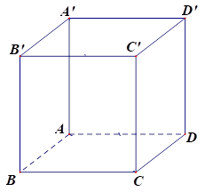
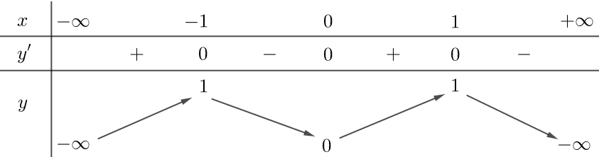
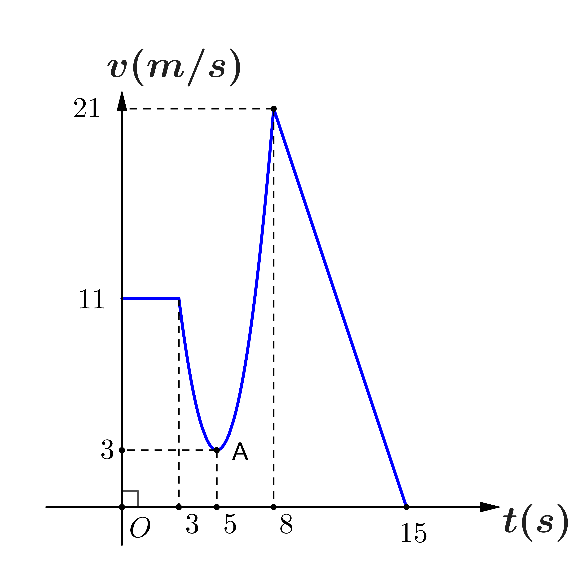
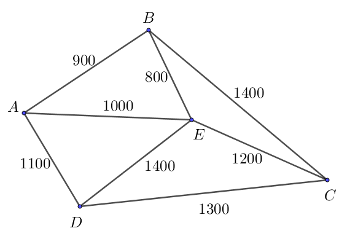

ĐỀ THI TOÁN - ĐỀ SỐ 11 HOT
Phần I: Trắc Nghiệm Nhiều Lựa Chọn
Tóm tắt kiến thức: Hình học không gian
Trong hình hộp, các vector thỏa mãn quy tắc hình bình hành: Nếu \( ABCD \) là hình bình hành, thì \( \overrightarrow{AB} + \overrightarrow{AD} = \overrightarrow{AC} \).
Câu 1:
Cho hình hộp \( ABCD.A'B'C'D' \) (minh họa như hình).

Phát biểu nào sau đây là đúng?
Chọn đáp án:
Lời giải:
Ta có \( AA'C'C \) là hình bình hành, theo quy tắc hình bình hành \( \overrightarrow{AA'} + \overrightarrow{AC} = \overrightarrow{A'C'} \).
Đáp án: A.
Tóm tắt kiến thức: Hình chiếu trong không gian
Hình chiếu vuông góc của điểm \( M(x_0; y_0; z_0) \) lên trục \( Oz \) là điểm \( (0; 0; z_0) \).
Câu 2:
Trong không gian tọa độ \( Oxyz \), cho điểm \( A(1; -2; 5) \). Hình chiếu vuông góc của điểm \( A \) lên trục \( Oz \) là:
Chọn đáp án:
Lời giải:
Hình chiếu vuông góc của điểm \( A(1; -2; 5) \) lên trục \( Oz \) có tọa độ là \( (0; 0; 5) \).
Đáp án: B.
Tóm tắt kiến thức: Nguyên hàm
Nguyên hàm của \( \cos x \) là \( \sin x + C \).
Câu 3:
Nguyên hàm của hàm số \( f(x) = \cos x \) là:
Chọn đáp án:
Lời giải:
Nguyên hàm của hàm số \( f(x) = \cos x \) là \( \sin x + C \).
Đáp án: D.
Tóm tắt kiến thức: Phương sai mẫu số liệu ghép nhóm
Phương sai: \( S^2 = \frac{1}{n} \sum n_i (x_i - \bar{x})^2 \), trong đó \( \bar{x} = \frac{\sum x_i n_i}{\sum n_i} \).
Câu 4:
Bảng dưới đây thống kê cự ly ném tạ của một vận động viên.
| Cự ly (m) | \([19; 19,5)\) | \([19,5; 20)\) | \([20; 20,5)\) | \([20,5; 21)\) | \([21; 21,5)\) |
|---|---|---|---|---|---|
| Tần số | 13 | 45 | 24 | 12 | 6 |
Chọn đáp án:
Lời giải:
Số trung bình: \( \bar{x} = \frac{13 \cdot 19,25 + 45 \cdot 19,75 + 24 \cdot 20,25 + 12 \cdot 20,75 + 6 \cdot 21,25}{100} = 20,015 \).
Phương sai: \( S^2 = \frac{13 \cdot (19,25 - 20,015)^2 + 45 \cdot (19,75 - 20,015)^2 + 24 \cdot (20,25 - 20,015)^2 + 12 \cdot (20,75 - 20,015)^2 + 6 \cdot (21,25 - 20,015)^2}{100} \approx 0,28 \).
Đáp án: A.
Tóm tắt kiến thức: Bất phương trình lôgarit
Bất phương trình \( \log_a f(x) < b \) tương đương \( 0 < f(x) < a^b \) (với \( a > 1 \)).
Câu 5:
Tập nghiệm của bất phương trình \( \log_2(3x + 1) < 2 \) là:
Chọn đáp án:
Lời giải:
Điều kiện: \( 3x + 1 > 0 \Leftrightarrow x > -\frac{1}{3} \).
Bất phương trình tương đương: \( 3x + 1 < 2^2 \Leftrightarrow 3x < 3 \Leftrightarrow x < 1 \).
Kết hợp điều kiện: \( x \in \left(-\frac{1}{3}; 1\right) \).
Đáp án: D.
Tóm tắt kiến thức: Tiệm cận của hàm số
Hàm số \( y = \frac{ax + b}{cx + d} \) có tiệm cận ngang \( y = \frac{a}{c} \) nếu \( c \neq 0 \).
Câu 6:
Cho hàm số \( y = \frac{ax + b}{cx + d} (c \neq 0, ad - bc \neq 0) \) có đồ thị như hình vẽ bên dưới.

Tiệm cận ngang của đồ thị hàm số là:
Chọn đáp án:
Lời giải:
Dựa vào đồ thị hàm số, suy ra tiệm cận ngang của đồ thị hàm số là \( y = -1 \).
Đáp án: B.
Tóm tắt kiến thức: Phương trình lũy thừa
Phương trình \( a^{f(x)} = b^{g(x)} \) có thể được giải bằng cách đưa về cùng cơ số.
Câu 7:
Nghiệm của phương trình \( 4^{x-1} = 8^{3+2x} \) là:
Chọn đáp án:
Lời giải:
Ta có \( 4^{x-1} = 8^{3+2x} \Leftrightarrow (2^2)^{x-1} = (2^3)^{3+2x} \Leftrightarrow 2^{2(x-1)} = 2^{3(3+2x)} \).
So sánh số mũ: \( 2(x-1) = 3(3+2x) \Leftrightarrow 2x - 2 = 9 + 6x \Leftrightarrow -8x = 11 \Leftrightarrow x = -\frac{11}{8} \).
Đáp án: B.
Tóm tắt kiến thức: Vector trong không gian
Tọa độ vector \( \overrightarrow{AB} \) từ \( A(x_1; y_1; z_1) \) đến \( B(x_2; y_2; z_2) \) là \( (x_2 - x_1; y_2 - y_1; z_2 - z_1) \).
Câu 8:
Trong không gian tọa độ \( Oxyz \), cho \( A(1; 1; -2) \), \( B(2; -1; 0) \). Tọa độ của vector \( \overrightarrow{AB} \) là:
Chọn đáp án:
Lời giải:
Tọa độ của vector \( \overrightarrow{AB} \) là \( (2 - 1; -1 - 1; 0 - (-2)) = (1; -2; 2) \).
Đáp án: A.
Tóm tắt kiến thức: Thể tích hình chбир>
Thể tích hình chóp \( S.ABC \) là \( V = \frac{1}{3} \cdot S_{\triangle ABC} \cdot h \), trong đó \( h \) là chiều cao từ \( S \) đến mặt phẳng \( (ABC) \).
Câu 9:
Cho hình chóp \( S.ABC \) có đáy \( ABC \) là tam giác đều cạnh \( a \). Biết \( SA \perp (ABC) \) và \( SA = a\sqrt{3} \). Thể tích của khối chóp \( S.ABC \) là:
Chọn đáp án:
Lời giải:
Diện tích tam giác đều \( \triangle ABC \): \( S_{\triangle ABC} = \frac{a^2 \sqrt{3}}{4} \).
Thể tích: \( V = \frac{1}{3} \cdot SA \cdot S_{\triangle ABC} = \frac{1}{3} \cdot a\sqrt{3} \cdot \frac{a^2 \sqrt{3}}{4} = \frac{a^3}{4} \).
Đáp án: D.
Tóm tắt kiến thức: Tính đơn điệu của hàm số
Hàm số đồng biến trên khoảng \( (a; b) \) nếu \( f'(x) > 0 \). Bảng biến thiên xác định các khoảng đồng biến.
Câu 10:
Cho hàm số \( y = f(x) \) có bảng biến thiên như sau:

Hàm số đã cho đồng biến trên khoảng nào sau đây?
Chọn đáp án:
Lời giải:
Từ bảng biến thiên, hàm số đồng biến trên \( (-1; 0) \).
Đáp án: C.
Tóm tắt kiến thức: Tích phân
Tích phân có tính chất tuyến tính: \( \int [af(x) + b] dx = a \int f(x) dx + b \int dx \).
Câu 11:
Cho \( I = \int_0^2 f(x) dx = 3 \). Khi đó \( J = \int_0^2 [4f(x) - 3] dx \) bằng:
Chọn đáp án:
Lời giải:
Ta có: \( J = \int_0^2 [4f(x) - 3] dx = 4 \int_0^2 f(x) dx - \int_0^2 3 dx = 4 \cdot 3 - 3 \cdot (2 - 0) = 12 - 6 = 6 \).
Đáp án: B.
Tóm tắt kiến thức: Cấp số cộng
Cấp số cộng có công thức: \( u_n = u_1 + (n-1)d \). Công sai \( d = u_{n+1} - u_n \).
Câu 12:
Cho cấp số cộng \( (u_n) \) có các số hạng \( u_2 = 2 \), \( u_3 = 5 \). Số hạng \( u_5 \) của cấp số cộng là:
Chọn đáp án:
Lời giải:
Ta có: \( \begin{cases} u_2 = u_1 + d = 2 \\ u_3 = u_1 + 2d = 5 \end{cases} \Rightarrow \begin{cases} u_1 + d = 2 \\ u_1 + 2d = 5 \end{cases} \Rightarrow \begin{cases} u_1 = -1 \\ d = 3 \end{cases} \).
Khi đó: \( u_5 = u_1 + 4d = -1 + 4 \cdot 3 = 11 \).
Đáp án: B.
Phần II: Trắc Nghiệm Đúng/Sai
Tóm tắt kiến thức: Xác suất
Xác suất: \( P(A) = \frac{n(A)}{n(\Omega)} \). Không gian mẫu của phép chọn ngẫu nhiên từ hai tập độc lập là tích số phần tử.
Câu 13:
Có hai hộp chứa các tấm thẻ. Hộp I chứa 8 tấm thẻ màu vàng đánh số từ 1 đến 8, hộp II chứa 9 tấm thẻ màu đỏ đánh số từ 1 đến 9. Lấy ngẫu nhiên từ mỗi hộp một tấm thẻ. Xét các phát biểu sau:
Chọn đáp án cho từng phát biểu:
a)
b)
c)
d)
Lời giải:
a) Đúng. Số cách: \( 8 \cdot 9 = 72 \).
b) Sai. Số chia hết cho 3: \( 6 + 9 + 9 = 24 \), xác suất: \( \frac{24}{72} = \frac{1}{3} \neq \frac{3}{10} \).
c) Đúng. Số cách giống nhau: \( 8 \), xác suất: \( \frac{8}{72} = \frac{1}{9} \).
d) Sai. Xác suất tích lẻ: \( \frac{4 \cdot 5}{72} = \frac{5}{18} \), xác suất tích chẵn: \( 1 - \frac{5}{18} = \frac{13}{18} \neq \frac{5}{18} \).
Đáp án: a) Đúng, b) Sai, c) Đúng, d) Sai.
Tóm tắt kiến thức: Hình học không gian và tọa độ
Tọa độ điểm và vector trong không gian. Diện tích hình chữ nhật: \( S = a \cdot b \).
Câu 14:
Nhà bác An được mô tả như hình vẽ bên dưới, trong đó phần thân nhà là hình hộp chữ nhật \( ABCD.EFGH \). Ngói nhà được lợp ngói hai mái là hai hình chữ nhật \( PEHQ \) và \( PFGQ \), biết tam giác \( EFP \) là tam giác cân tại \( P \). Gọi \( T \) là trung điểm của cạnh \( DC \). Các kích thước của nhà lần lượt là \( AB = 6m \), \( AE = 5m \), \( AD = 8m \), \( QT = 7m \). Xét hệ trục tọa độ \( Oxyz \) sao cho gốc tọa độ là điểm \( O \) thuộc đoạn \( AD \) sao cho \( OA = 2m \). Khi đó:
Chọn đáp án cho từng phát biểu:
a)
b)
c)
Lời giải:
a) Đúng. \( O(0; 0; 0) \), \( OA = 2m \), tọa độ \( A(2; 0; 0) \).
b) Sai. \( C(2; 6; 0) \), \( \overrightarrow{AC} = (0; 6; 0) \neq (6; 6; 0) \).
c) Sai. Diện tích mái: \( 2 \cdot 6 \cdot \sqrt{5^2 + 3.5^2} \approx 57.58 m^2 \). Số ngói: \( 57.58 \cdot 22 \approx 1267 \). Chi phí: \( 1267 \cdot 11000 \approx 13937000 \neq 13960000 \).
Đáp án: a) Đúng, b) Sai, c) Sai.
Tóm tắt kiến thức: Chuyển động và tích phân
Quãng đường: \( S = \int v(t) dt \). Vận tốc trung bình: \( v_{tb} = \frac{S}{\Delta t} \).
Câu 15:
Đồ thị vận tốc \( v(t) \) của một chất điểm chuyển động được cho như hình vẽ bên dưới.

Xét các phát biểu sau:
Chọn đáp án cho từng phát biểu:
a)
b)
c)
d)
Lời giải:
a) Đúng. \( v(15) = 0 \).
b) Sai. \( v(t) = 11 \) chỉ đúng trong khoảng \( [0; 3] \), cần xác định \( v(t) \) cụ thể.
c) Đúng. \( v(t) = -3t + 45 \), \( S = \int_8^{15} (-3t + 45) dt = 73,5 \).
d) Sai. \( v(t) = 2t^2 - 20t + 53 \), \( S = \int_3^8 v(t) dt = \frac{115}{3} \), \( v_{tb} = \frac{23}{3} \approx 7,67 > 7 \).
Đáp án: a) Đúng, b) Sai, c) Đúng, d) Sai.
Tóm tắt kiến thức: Hàm số lượng giác
Hàm \( y = a\sin x + b \) có giá trị nhỏ nhất là \( b - |a| \). Đạo hàm: \( (a\sin x + b)' = a\cos x \).
Câu 16:
Cho hàm số \( y = f(x) = 2\sin x + 1 \). Xét các phát biểu sau:
Chọn đáp án cho từng phát biểu:
a)
b)
c)
d)
Lời giải:
a) Đúng. \( y = 2\sin x + 1 \), \( -1 \leq \sin x \leq 1 \Rightarrow -1 \leq y \leq 3 \), giá trị nhỏ nhất là -1.
b) Đúng. \( f(0) = 2\sin 0 + 1 = 1 \), \( f\left(\frac{\pi}{2}\right) = 2\sin \frac{\pi}{2} + 1 = 3 \).
c) Sai. \( f'(x) = 2\cos x \neq 2\cos x + 1 \).
d) Sai. \( f'(x) = 2\cos x = 0 \Rightarrow \cos x = 0 \Rightarrow x = \frac{\pi}{2} \), không có \( \frac{\pi}{4} \).
Đáp án: a) Đúng, b) Đúng, c) Sai, d) Sai.
Phần III: Trắc Nghiệm Trả Lời Ngắn
Tóm tắt kiến thức: Xác suất
Xác suất: \( P(A) = \frac{n(A)}{n(\Omega)} \). Số cách xếp \( n \) học sinh vào \( n \) ghế là \( n! \).
Câu 17:
Một lớp gồm \( n \) học sinh có tên gọi khác nhau, trong đó có 3 học sinh là An, Bình, Cường. Khi xếp ngẫu nhiên \( n \) học sinh này vào một dãy ghế theo hàng dọc được đánh số thứ tự từ 1 đến \( n \). Xác suất để số ghế của An bằng trung bình cộng số ghế của Bình và Cường là \( \frac{7}{195} \). Tìm \( n \).
Nhập đáp án:
Lời giải:
Nếu \( n = 2k + 1 \): Số cách xếp: \( (2k + 1)! \). Số cách thỏa mãn: \( 2k^2 \cdot (2k - 2)! \).
Xác suất: \( \frac{2k^2 (2k - 2)!}{(2k + 1)!} = \frac{7}{195} \Rightarrow \frac{2k^2}{(2k + 1) \cdot 2k \cdot (2k - 1)} = \frac{7}{195} \).
Giải: \( 195k = 7(4k^2 - 1) \Rightarrow 28k^2 - 195k - 7 = 0 \Rightarrow k = 7 \Rightarrow n = 15 \).
Nếu \( n = 2k \): Xác suất không thỏa mãn.
Đáp án: 15.
Tóm tắt kiến thức: Bài toán tối ưu
Tìm đường đi ngắn nhất qua các điểm là bài toán người giao hàng (TSP), giải bằng cách liệt kê.
Câu 18:
Một công ty vận tải cần giao hàng đến tất cả các thành phố \( A, B, C, D, E \). Chi phí di chuyển giữa các thành phố được mô tả trên hình.

Xe giao hàng xuất phát từ \( A \), đi qua tất cả các thành phố còn lại đúng một lần rồi trở lại \( A \). Tìm chi phí thấp nhất của xe giao hàng (tính theo đơn vị nghìn đồng).
Nhập đáp án:
Lời giải:
Liệt kê các đường đi:
- \( A \to B \to E \to C \to D \to A \): \( 900 + 800 + 1200 + 1300 + 1100 = 5300 \).
- \( A \to D \to C \to E \to B \to A \): \( 1100 + 1300 + 1200 + 800 + 900 = 5300 \).
Chi phí thấp nhất: 5300 nghìn đồng.
Đáp án: 5300.
Tóm tắt kiến thức: Tối ưu lợi nhuận
Lợi nhuận: \( P(x) = \text{Doanh thu} - \text{Chi phí} \). Tìm cực trị bằng đạo hàm.
Câu 19:
Một hộ gia đình sản xuất chiếu cói ở Nga Sơn mỗi ngày sản xuất được \( x \) chiếc chiếu (\( 0 \leq x \leq 20 \)). Chi phí biến để sản xuất \( x \) chiếc chiếu (tính bằng nghìn đồng) cho bởi hàm số \( C'(x) = 3x^2 - 4x + 10 \). Biết chi phí cố định ban đầu là 500 nghìn đồng. Giả sử gia đình này bán hết chiếu mỗi ngày với giá 270 nghìn đồng/chiếc. Tính lợi nhuận tối đa (theo đơn vị nghìn đồng).
Nhập đáp án:
Lời giải:
Chi phí: \( C(x) = \int (3x^2 - 4x + 10) dx = x^3 - 2x^2 + 10x + 500 \).
Lợi nhuận: \( P(x) = 270x - (x^3 - 2x^2 + 10x + 500) = -x^3 + 2x^2 + 260x - 500 \).
\( P'(x) = -3x^2 + 4x + 260 = 0 \Rightarrow x = 10 \).
\( P(0) = -500 \), \( P(10) = 1300 \), \( P(20) = -2500 \).
Lợi nhuận tối đa: 1300 nghìn đồng.
Đáp án: 1300.
Tóm tắt kiến thức: Tối ưu trong không gian
Tìm cực trị của hàm số khoảng cách bằng cách sử dụng phương pháp Lagrange hoặc đạo hàm.
Câu 20:
Trong không gian với hệ trục tọa độ \( Oxyz \), cho các điểm \( A(3; -2; -1) \), \( B(1; 4; 6) \), \( C(3; 38; -16) \), \( D(2; 5; 1) \). Điểm \( M(a; b; c) \) thỏa mãn biểu thức \( P = MD^4 - \frac{16}{3} \cdot MD^3 - 4MA^2 - 5MB^2 - MC^2 \) đạt giá trị nhỏ nhất. Tìm giá trị lớn nhất của biểu thức \( Q = a + b + c \) (làm tròn kết quả đến hàng phần nghìn).
Nhập đáp án:
Lời giải:
Tìm \( I \) thỏa \( 4\overrightarrow{IA} + 5\overrightarrow{IB} + \overrightarrow{IC} = 0 \Rightarrow I \equiv D(2; 5; 1) \).
\( P = MD^4 - \frac{16}{3} \cdot MD^3 - 10 \cdot MD^2 - 1730 \).
Đặt \( MD = x \), \( f(x) = x^4 - \frac{16}{3}x^3 - 10x^2 - 1730 \), \( f'(x) = 4x^3 - 16x^2 - 20x = 0 \Rightarrow x = 5 \).
\( MD = 5 \Rightarrow (a-2)^2 + (b-5)^2 + (c-1)^2 = 25 \).
\( (a + b + c - 8)^2 \leq 3 \cdot 25 \Rightarrow a + b + c \leq 8 + 5\sqrt{3} \approx 16,7 \).
Đáp án: 16,7.
Tóm tắt kiến thức: Khoảng cách trong không gian
Khoảng cách giữa hai đường thẳng chéo nhau được tính thông qua khoảng cách từ một điểm trên đường này đến đường kia.
Câu 21:
Cho hình hộp chữ nhật \( ABCD.A'B'C'D' \) có \( AB = 10 \), \( AD = 20 \). Khoảng cách giữa hai đường thẳng \( AA' \) và \( BD \) bằng bao nhiêu? (Làm tròn kết quả đến hàng phần trăm).
Nhập đáp án:
Lời giải:
Trong mặt phẳng \( (ABCD) \), kẻ \( AH \perp BD (H \in BD) \).
\( AA' \perp (ABCD) \Rightarrow AA' \perp AH \Rightarrow d(AA', BD) = AH \).
\( \frac{1}{AH^2} = \frac{1}{AB^2} + \frac{1}{AD^2} = \frac{1}{10^2} + \frac{1}{20^2} = \frac{5}{400} \Rightarrow AH = 4\sqrt{5} \approx 8,94 \).
Đáp án: 8,94.
Tóm tắt kiến thức: Tối ưu hóa lợi nhuận và thuế
Tìm cực trị của hàm lợi nhuận và hàm thuế bằng đạo hàm, kết hợp điều kiện tối ưu.
Câu 22:
Một doanh nghiệp sản xuất độc quyền một loại sản phẩm. Khi sản xuất và bán hết \( x \) sản phẩm (\( 0 < x < 2000 \)), tổng số tiền thu được là \( F(x) = 2000x - x^2 \) (nghìn đồng) và tổng chi phí là \( G(x) = x^2 + 1440x + 50 \) (nghìn đồng). Công ty chịu thuế phụ thu \( t \) (nghìn đồng) cho mỗi đơn vị sản phẩm. Mức thuế phụ thu \( t \) là bao nhiêu để nhà nước thu được số tiền thuế phụ thu lớn nhất và doanh nghiệp cũng thu được lợi nhuận nhiều nhất?
Nhập đáp án:
Lời giải:
Lợi nhuận: \( f(x) = F(x) - G(x) - x \cdot t = -2x^2 + (560 - t)x - 50 \).
\( f'(x) = -4x + 560 - t = 0 \Rightarrow x = \frac{560 - t}{4} \).
Thuế: \( g(t) = t \cdot \frac{560 - t}{4} \).
\( g'(t) = \frac{560 - 2t}{4} = 0 \Rightarrow t = 280 \).
Tại \( t = 280 \), \( x = 70 \), lợi nhuận đạt cực đại.
Đáp án: 280.